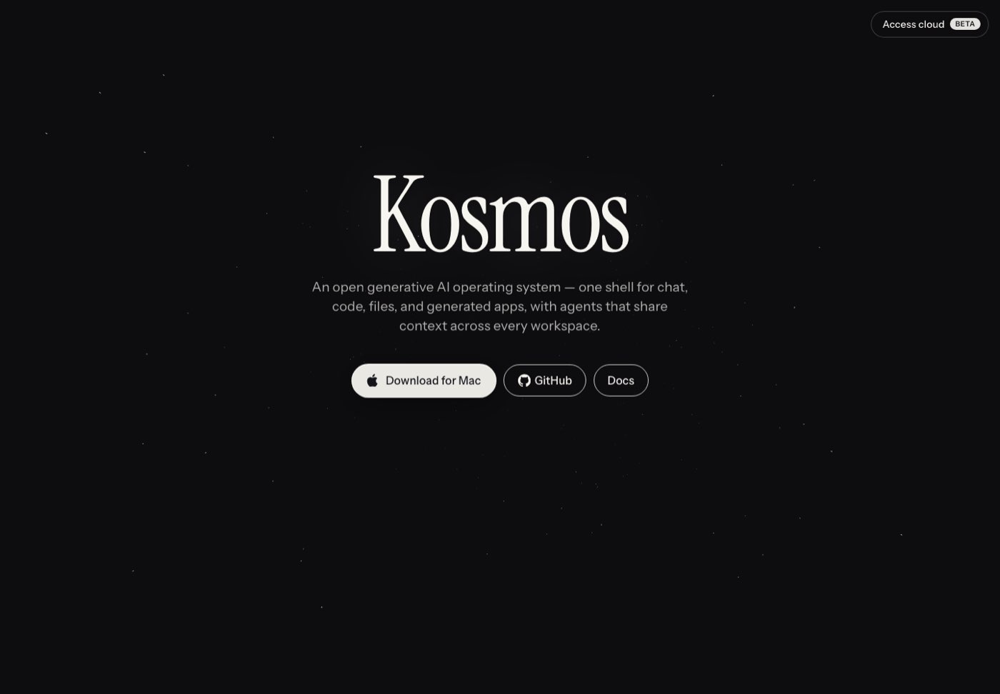
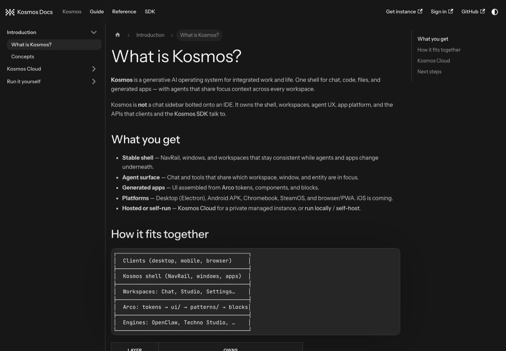

kosmos.computer
The generative AI operating system.
One shell for chat, code, files and generated apps, with agents that share context across every workspace. The interface is built with Arco, a generative UI library.
Illustration of the shell parts, with made-up content. Not a screenshot.
kosmos.computer
A generative AI operating system for integrated work and life.
One shell for chat, code, files and generated apps, with agents that share context across every workspace. It owns the shell, the workspaces, the agent experience, the app platform and the APIs that clients and the SDK talk to.
Up to 10 characters: A to Z, 0 to 9, space, ! and . Anything else is skipped.
The Kosmos sprite mark, ported from the archived kosmos.computer repo: a 7 by 5 grid of squares per letter, played with its boot animation strings. Letters the original lacks (K, M and others) are drawn in the same style.
What it is
An operating system that agents build apps in.
Kosmos is not a chat sidebar bolted onto an IDE. It owns the shell, the workspaces, the agent experience, the app platform and the APIs that clients and the SDK talk to.
Stable shell prototype
A navigation rail, windows and workspaces that stay consistent while agents and apps change underneath.
Agent surface prototype
Chat and tools that share which workspace, window and entity are in focus.
Generated apps prototype
Interfaces assembled from Arco tokens, components and blocks, rather than pasted as text.
Hosted or self-run available
Kosmos Cloud for a private managed instance (beta), or run it locally or self-host with Docker.
Sources: docs guide kosmos/what-is-kosmos, kosmos/run-locally, kosmos/self-host. The app itself is a prototype repository; a running shell was not rendered for the archive.
The shell
Windows, a dock and a command palette.
The shell is written in React. These are the real parts in the repository, from the archive of 24 Oct 2026.
Window frame
WindowFramedraws app windows with controls and a focused title.Dock and hover dock
Dock,HoverDockandMobileDockhold pinned apps; extra apps sit under "View all apps".Menu bar
MenuBar: left-nav toggle, search, focused window title, status tray, clock and settings.Navigation rail
NavRailswitches workspaces without reshuffling the chrome.Command palette
CommandPalette: a Cmd+K overlay to jump to apps and settings sections, or switch shell modes.Native shells
Electron (desktop), Capacitor (mobile), Tauri and a Swift menu bar tasks app live next to it.
Sources: src/os/*.tsx in the Kosmos repository (all prototype). The OS shell and app windows could not be rendered without the backend, so no screenshot of them exists.


Apps
About forty app windows.
The registry of system apps in the shell lists these names. They are code in a prototype repository: whether each one works is not verified here.
- Chat
- Studio
- Apps
- Skills
- Agents
- Memory
- Key Wallet
- APIs
- Automations
- Drive
- Maps
- Search
- Longformer
- Kamiji
- Keyboard
- Music
- Video
- Meet
- Podcasts
- Downloads
- Pay
- Notes
- Calendar
- Tasks
- Board
- Contacts
- Groups
- Messenger
- Social
- Sheets
- Generator
- Image Gen
- Terminal
- Models
- Settings
Source: src/os/systemApps.tsx (prototype). Static installable apps (calculator, calendar, game, timer, docs, slides) also exist as unverified. Kamiji is one of the apps; this is a different product from Kamiji the character library.
Arco UI
The vocabulary agents draw with.
Arco owns the tokens, components, blocks and registry contract. Kosmos owns the shell and the agent. The two have different names on purpose.
| Kosmos | Arco | |
|---|---|---|
| What it is | Generative AI operating system | Generative UI library |
| Owns | Shell, workspaces, agent UX, app platform | Tokens, components, blocks, registry contract |
| Name used | "Kosmos" in product copy | "Arco" in docs and library APIs |
When an agent generates UI, Kosmos provides the context (workspace, window, entity in focus), Arco provides the valid blocks and props, and a registry validates the output. The registry is planned; the tokens and primitives are prototype.
Sources: docs guide kosmos-vs-arco, what-is-arco. Components, tokens and the live demo are on the Arco page.
SDK
Talk to a Kosmos environment from code.
The Kosmos SDK is an HTTP and streaming client for one environment, local or hosted. It streams typed agent events and is published under the MIT licence. available
npm install @kosmos-computer/sdkimport { KosmosClient } from "@kosmos-computer/sdk";
const kosmos = new KosmosClient({
baseUrl: process.env.KOSMOS_URL!,
token: process.env.KOSMOS_TOKEN!,
});
await kosmos.ping();
for await (const event of kosmos.chat.stream({
message: "List my calendar events for today",
mode: "agent",
})) {
if (event.type === "text_delta") process.stdout.write(event.delta);
}Packages: @kosmos-computer/sdk and @kosmos-computer/types. You need an external client token from Settings, External Access, and Node.js 22 or later.
Sources: docs sdk/overview, sdk/getting-started; repository Kosmos-computer/kosmos-sdk (MIT).
Status
What is live and what is not.
Taken from the owner's archive of 24 Oct 2026. It may be out of date.
| Part | Status | Note |
|---|---|---|
| Public splash, kosmos.computer | available | Redirects to www.kosmos.computer: the word Kosmos, one sentence, a Mac download, GitHub and Docs. |
| Other www pages (features, apps, platforms and more) | unverified | Live but behind a temporary passcode since 11 Jul 2026, so not public. |
| Docs, docs.kosmos.computer | available | Docusaurus site: Kosmos, Guide, Reference and SDK sections. |
| Desktop, Android APK, Chromebook, SteamOS, browser (PWA) | available | As listed in the site's own copy; not independently verified. |
| iOS | planned | "Coming": a Capacitor build path, no App Store release. |
| Kosmos Cloud (managed instance) | prototype | Called beta in the site copy. Sign-in needs an account. |
| OS shell and system apps | prototype | Source of 18 Oct 2026; needs its backend, not rendered here. |
| Arco block registry | planned | Described in the docs as planned. |
| SDK | available | MIT, source of 10 Jul 2026. |
Get started
Run it yourself, or use the hosted beta.
The shortest path from the docs. An LLM API key is optional for a first start: a mock provider works offline.
- Install Node.js 22 or later, then clone Kosmos-computer/Kosmos.
- From the repository root run:
npm install npm run setup # first run npm run dev # shell :4610, API :4600 - Open
http://localhost:4610and complete the install wizard (model mode, then owner account). - Want it managed? Sign up for Kosmos Cloud (beta), or self-host with Docker.
Sources: docs kosmos/run-locally, kosmos/self-host. Commands are as published and were not run for this page.
Links
Where the real product lives.
kosmos.computer
The public splash and download.
docs.kosmos.computer
Guides, reference and the SDK.
github.com/Kosmos-computer/Kosmos
The shell and system apps. kosmos-sdk holds the SDK.
Arco UI on this site
Components, tokens and a scripted demo.